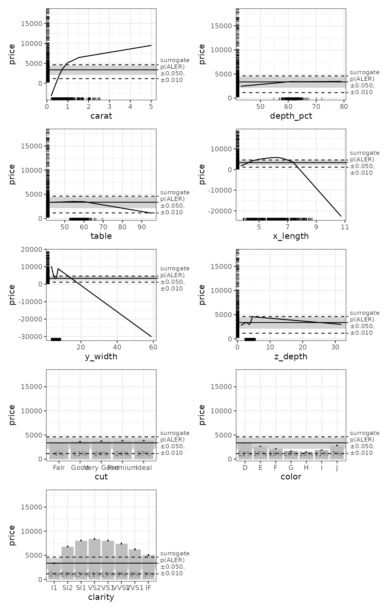

Introduction to the `ale` package
Chitu Okoli
2024-01-04
Source:vignettes/ale-intro.Rmd
ale-intro.RmdAccumulated Local Effects (ALE) were initially developed as a model-agnostic approach for global explanations of the results of black-box machine learning algorithms. ALE has at least two primary advantages over other approaches like partial dependency plots (PDP) and SHapley Additive exPlanations (SHAP): its values are not affected by the presence of interactions among variables in a model and its computation is relatively rapid. This package rewrites the original code from the ‘ALEPlot’ package for calculating ALE data and it completely reimplements the plotting of ALE values. It also extends the original ALE concept to add bootstrap-based confidence intervals and ALE-based statistics that can be used for statistical inference.
For more details, see Okoli, Chitu. 2023. “Statistical Inference Using Machine Learning and Classical Techniques Based on Accumulated Local Effects (ALE).” arXiv. https://doi.org/10.48550/arXiv.2310.09877.
This vignette demonstrates the basic functionality of the
ale package on standard large datasets used for machine
learning. A separate vignette is devoted to its use on small datasets, as is often
the case with statistical inference. (How small is small? That’s a tough
question, but as that vignette explains, most datasets of less than 2000
rows are probably “small” and even many datasets that are more than 2000
rows are nonetheless “small”.) Other vignettes introduce ALE-based statistics for statistical
inference, show how the ale package handles various datatypes of input variables,
and compares the ale package
with the reference ALEPlot package.
diamonds dataset
For this introduction, we use the diamonds dataset,
built-in with the ggplot2 graphics system. We cleaned the
original version by removing duplicates and
invalid entries where the length (x), width (y), or depth (z) is 0.
# Clean up some invalid entries
diamonds <- ggplot2::diamonds |>
filter(!(x == 0 | y == 0 | z == 0)) |>
# https://lorentzen.ch/index.php/2021/04/16/a-curious-fact-on-the-diamonds-dataset/
distinct(
price, carat, cut, color, clarity,
.keep_all = TRUE
) |>
rename(
x_length = x,
y_width = y,
z_depth = z,
depth_pct = depth
)
summary(diamonds)
#> carat cut color clarity depth_pct
#> Min. :0.2000 Fair : 1492 D:4658 SI1 :9857 Min. :43.00
#> 1st Qu.:0.5200 Good : 4173 E:6684 VS2 :8227 1st Qu.:61.00
#> Median :0.8500 Very Good: 9714 F:6998 SI2 :7916 Median :61.80
#> Mean :0.9033 Premium : 9657 G:7815 VS1 :6007 Mean :61.74
#> 3rd Qu.:1.1500 Ideal :14703 H:6443 VVS2 :3463 3rd Qu.:62.60
#> Max. :5.0100 I:4556 VVS1 :2413 Max. :79.00
#> J:2585 (Other):1856
#> table price x_length y_width
#> Min. :43.00 Min. : 326 Min. : 3.730 Min. : 3.680
#> 1st Qu.:56.00 1st Qu.: 1410 1st Qu.: 5.160 1st Qu.: 5.170
#> Median :57.00 Median : 3365 Median : 6.040 Median : 6.040
#> Mean :57.58 Mean : 4686 Mean : 6.009 Mean : 6.012
#> 3rd Qu.:59.00 3rd Qu.: 6406 3rd Qu.: 6.730 3rd Qu.: 6.720
#> Max. :95.00 Max. :18823 Max. :10.740 Max. :58.900
#>
#> z_depth
#> Min. : 1.070
#> 1st Qu.: 3.190
#> Median : 3.740
#> Mean : 3.711
#> 3rd Qu.: 4.150
#> Max. :31.800
#> Here is the description of the modified dataset.
| Variable | Description |
|---|---|
| price | price in US dollars ($326–$18,823) |
| carat | weight of the diamond (0.2–5.01) |
| cut | quality of the cut (Fair, Good, Very Good, Premium, Ideal) |
| color | diamond color, from D (best) to J (worst) |
| clarity | a measurement of how clear the diamond is (I1 (worst), SI2, SI1, VS2, VS1, VVS2, VVS1, IF (best)) |
| x_length | length in mm (0–10.74) |
| y_width | width in mm (0–58.9) |
| z_depth | depth in mm (0–31.8) |
| depth_pct | total depth percentage = z / mean(x, y) = 2 * z / (x + y) (43–79) |
| table | width of top of diamond relative to widest point (43–95) |
str(diamonds)
#> tibble [39,739 × 10] (S3: tbl_df/tbl/data.frame)
#> $ carat : num [1:39739] 0.23 0.21 0.23 0.29 0.31 0.24 0.24 0.26 0.22 0.23 ...
#> $ cut : Ord.factor w/ 5 levels "Fair"<"Good"<..: 5 4 2 4 2 3 3 3 1 3 ...
#> $ color : Ord.factor w/ 7 levels "D"<"E"<"F"<"G"<..: 2 2 2 6 7 7 6 5 2 5 ...
#> $ clarity : Ord.factor w/ 8 levels "I1"<"SI2"<"SI1"<..: 2 3 5 4 2 6 7 3 4 5 ...
#> $ depth_pct: num [1:39739] 61.5 59.8 56.9 62.4 63.3 62.8 62.3 61.9 65.1 59.4 ...
#> $ table : num [1:39739] 55 61 65 58 58 57 57 55 61 61 ...
#> $ price : int [1:39739] 326 326 327 334 335 336 336 337 337 338 ...
#> $ x_length : num [1:39739] 3.95 3.89 4.05 4.2 4.34 3.94 3.95 4.07 3.87 4 ...
#> $ y_width : num [1:39739] 3.98 3.84 4.07 4.23 4.35 3.96 3.98 4.11 3.78 4.05 ...
#> $ z_depth : num [1:39739] 2.43 2.31 2.31 2.63 2.75 2.48 2.47 2.53 2.49 2.39 ...
summary(diamonds$price)
#> Min. 1st Qu. Median Mean 3rd Qu. Max.
#> 326 1410 3365 4686 6406 18823For machine learning analysis that intends to extrapolate its results to future data, We must first split the dataset into training and test samples. The model is developed on the training set and then evaluated on the test set. (When a dataset is too small to feasibly split into training and test sets, then the ale package has tools to appropriately handle such small datasets.
# Split the dataset into training and test sets
# https://stackoverflow.com/a/54892459/2449926
set.seed(0)
train_test_split <- sample(c(TRUE, FALSE), nrow(diamonds), replace = TRUE, prob = c(0.8, 0.2))
diamonds_train <- diamonds[train_test_split, ]
diamonds_test <- diamonds[!train_test_split, ]So, now we split the dataset with an 80-20 split for a training set of 31,841 rows and a test set of 7,898 rows. Now we can build our model.
Modelling with general additive models (GAM)
ALE is a model-agnostic IML approach, that is, it works with any kind
of machine learning model. As such, the ale works with any
R model with the only condition that it can predict numeric outcomes
(such as raw estimates for regression and probabilities or odds ratios
for classification). For this demonstration, we will use general
additive models (GAM), a relatively fast algorithm that models data more
flexibly than ordinary least squares regression. It is beyond our scope
here to explain how GAM works (you can learn more with Noam Ross’s excellent tutorial), but the
examples here will work with any machine learning algorithm.
We train a GAM model to predict diamond prices:
# Create a GAM model with flexible curves to predict diamond prices.
# (In testing, mgcv::gam actually performed better than nnet.)
# Smooth all numeric variables and include all other variables
# Build model on training data, not on the full dataset.
gam_diamonds <- mgcv::gam(
price ~ s(carat) + s(depth_pct) + s(table) + s(x_length) + s(y_width) + s(z_depth) +
cut + color + clarity,
data = diamonds_train
)
summary(gam_diamonds)
#>
#> Family: gaussian
#> Link function: identity
#>
#> Formula:
#> price ~ s(carat) + s(depth_pct) + s(table) + s(x_length) + s(y_width) +
#> s(z_depth) + cut + color + clarity
#>
#> Parametric coefficients:
#> Estimate Std. Error t value Pr(>|t|)
#> (Intercept) 4413.8270 14.6887 300.490 < 2e-16 ***
#> cut.L 282.9005 42.6670 6.630 3.40e-11 ***
#> cut.Q 0.5949 29.9527 0.020 0.984153
#> cut.C 59.0119 22.1652 2.662 0.007763 **
#> cut^4 38.5756 15.9970 2.411 0.015896 *
#> color.L -2154.1921 21.2064 -101.582 < 2e-16 ***
#> color.Q -698.0122 19.4190 -35.945 < 2e-16 ***
#> color.C -66.5582 18.2415 -3.649 0.000264 ***
#> color^4 75.6030 17.0393 4.437 9.15e-06 ***
#> color^5 -116.1725 16.1289 -7.203 6.03e-13 ***
#> color^6 -46.9826 15.0328 -3.125 0.001778 **
#> clarity.L 4174.5052 37.6891 110.762 < 2e-16 ***
#> clarity.Q -1571.3435 35.1359 -44.722 < 2e-16 ***
#> clarity.C 807.3063 30.3669 26.585 < 2e-16 ***
#> clarity^4 -253.7668 24.6400 -10.299 < 2e-16 ***
#> clarity^5 211.8216 20.4734 10.346 < 2e-16 ***
#> clarity^6 37.3081 18.0393 2.068 0.038633 *
#> clarity^7 129.6810 15.9079 8.152 3.71e-16 ***
#> ---
#> Signif. codes: 0 '***' 0.001 '**' 0.01 '*' 0.05 '.' 0.1 ' ' 1
#>
#> Approximate significance of smooth terms:
#> edf Ref.df F p-value
#> s(carat) 8.083 8.748 21.871 <2e-16 ***
#> s(depth_pct) 6.924 7.869 7.081 <2e-16 ***
#> s(table) 4.035 5.061 2.620 0.0199 *
#> s(x_length) 7.284 8.023 39.995 <2e-16 ***
#> s(y_width) 8.679 8.878 153.594 <2e-16 ***
#> s(z_depth) 8.675 8.868 10.990 <2e-16 ***
#> ---
#> Signif. codes: 0 '***' 0.001 '**' 0.01 '*' 0.05 '.' 0.1 ' ' 1
#>
#> R-sq.(adj) = 0.929 Deviance explained = 92.9%
#> GCV = 1.2564e+06 Scale est. = 1.254e+06 n = 31841
ale function for generating ALE data and plots
The core function in the ale package is the
ale function. Consistent with tidyverse conventions, its
first argument is a dataset. Its second argument is a model object–any R
model object that can generate numeric predictions is acceptable. By
default, it generates ALE data and plots on all the input variables used
for the model. To change these options (e.g., to calculate ALE for only
a subset of variables; to output the data only or the plots only rather
than both; or to use a custom, non-standard predict function for the
model), see details in the help file for the function:
help(ale).
The ale function returns a list with various elements.
The two main ones are data, containing the ALE x intervals
and the y values for each interval, and plots, containing
the ALE plots as individual ggplot objects. Each of these
elements is a list with one element per input variable. The function
also returns several details about the outcome (y) variable and
important parameters that were used for the ALE calculation. Another
important element is stats, containing ALE-based
statistics, which we describe in a separate vignette.
# Simple ALE without bootstrapping
ale_gam_diamonds <- ale(diamonds_test, gam_diamonds)
#> Calculating ALE ■ 0% | ETA: ?
#> Calculating ALE ■■■■■■■■■■■■■■■■■■ 56% | ETA: 2sTo access the plot for a specific variable, we can call it by its
variable name as an element of the plots element. These are
ggplot objects, so they are easy to manipulate. For
example, to access and print the carat ALE plot, we simply
call ale_gam_diamonds$plots$carat :
# Print a plot by entering its reference
ale_gam_diamonds$plots$carat
To iterate the list and plot all the ALE plots, we provide here some
demonstration code using the gridExtra package for
arranging multiple plots in a common plot grid using
gridExtra::grid.arrange. We need to pass the list of plots
to the grobs argument and we can specify that we want two
plots per row with the ncol argument.
# Print all plots
gridExtra::grid.arrange(grobs = ale_gam_diamonds$plots, ncol = 2)
Bootstrapped ALE
One of the key features of the ALE package is bootstrapping of the
ALE results to ensure that the results are reliable, that is,
generalizable to data beyond the sample on which the model was built.
Such external generalization requires analyzing the ale
function on test data distinct from the training data. When samples are
too small for this, we provide a different bootstrapping method,
model_bootstrap, explained in the vignette for small datasets.
Although ALE is faster than most other IML techniques for global explanation such as partial dependence plots (PDP) and SHAP, it still requires some time to run. Bootstrapping multiplies that time by the number of bootstrap iterations. Since this vignette is just a demonstration of package functionality rather than a real analysis, we will demonstrate bootstrapping on a small subset of the test data. This will run much faster as the speed of the ALE algorithm depends on the size of the dataset. So, let us take a random sample of 200 rows of the test set.
# Bootstraping is rather slow, so create a smaller subset of new data for demonstration
set.seed(0)
new_rows <- sample(nrow(diamonds_test), 200, replace = FALSE)
diamonds_small_test <- diamonds_test[new_rows, ]Now we create bootstrapped ALE data and plots using the
boot_it argument. ALE is a relatively stable IML algorithm
(compared to others like PDP), so 100 bootstrap samples should be
sufficient for relatively stable results, especially for model
development. Final results could be confirmed with 1000 bootstrap
samples or more, but there should not be much difference in the results
beyond 100 iterations. However, so that this introduction runs faster,
we demonstrate it here with only 10 iterations.
# Normally boot_it should be set to 100, but just 10 here for a faster demonstration
ale_gam_diamonds_boot <- ale(diamonds_small_test, gam_diamonds, boot_it = 10)
#> Calculating ALE ■ 0% | ETA: ?
#> Calculating ALE ■■■■■■■■■■■■■■ 44% | ETA: 2s
# Bootstrapping produces confidence intervals
gridExtra::grid.arrange(grobs = ale_gam_diamonds_boot$plots, ncol = 2)
In this case, the bootstrapped results are mostly similar to single
(non-bootstrapped) ALE result. In principle, we should always bootstrap
the results and trust only in bootstrapped results. The most unusual
result is that values of x_length (the length of the
diamond) from 6.2 mm or so and higher are associated with lower diamond
prices. When we compare this with the y_width value (width
of the diamond), we suspect that when both the length and width (that
is, the size) of a diamond become increasingly large, the price
increases so much more rapidly with the width than with the length that
the width has an inordinately high effect that is tempered by a
decreased effect of the length at those high values. This would be worth
further exploration for real analysis, but here we are just introducing
the key features of the package.
ALE interactions
Another advantage of ALE is that it provides data for two-way
interactions between variables. This is implemented with the
ale::ale_ixn function. Like the ale function,
ale_ixn similarly requires an input dataset and a model
object. By default, it generates ALE data and plots on all possible
pairs of input variables used for the model. However, an ALE interaction
requires at least one of the variables to be numeric. So,
ale_ixn has a notion of x1 and x2 variables; the x1
variable must be numeric whereas the x2 can be of any input datatype. To
change the default options (e.g., to calculate interactions for only
certain pairs of variables), see details in the help file for the
function: help(ale_ixn).
# ALE two-way interactions
ale_ixn_gam_diamonds <- ale_ixn(diamonds_test, gam_diamonds)
#> Calculating ALE interactions ■ 0% | ETA: ?
#> Calculating ALE interactions ■■■■■■ 17% | ETA: 21s
#> Calculating ALE interactions ■■■■■■■■■■■ 33% | ETA: 15s
#> Calculating ALE interactions ■■■■■■■■■■■■■■■■ 50% | ETA: 10s
#> Calculating ALE interactions ■■■■■■■■■■■■■■■■■■■■■ 67% | ETA: 6sLike the ale function, the ale_ixn returns
a list with one element per input x1 variable, as well as a
.common_data element with details about the outcome (y)
variable. However, in this case, each variable’s element consists of a
list of all the x2 variables for which the x1 interaction is calculated.
Each x2 element then has two elements: the ALE data for that variable
and a ggplot plot object that plots that ALE data. In the
interaction plots, the x1 variable is always shown on the x axis and the
x2 variable on the y axis.
Again, we provide here some demonstration code to plot all the ALE
plots. It is a little more complex this time because of the two levels
of interacting variables in the output data, so we use the
purrr package to iterate the list structure.
purrr::walk takes a list as its first argument and then we
specify an anonymous function for what we want to do with each element
of the list. We specify the anonymous function as
\(.x1) {...} where .x1 in our case represents
each individual element of ale_ixn_gam_diamonds$plots in
turn, that is, a sublist of plots with which the x1 variable interacts.
We print the plots of all the x1 interactions as a combined grid of
plots with gridExtra::grid.arrange, as before.
# Print all interaction plots
ale_ixn_gam_diamonds$plots |>
purrr::walk(\(.x1) { # extract list of x1 ALE outputs
gridExtra::grid.arrange(grobs = .x1, ncol = 2) # plot each x1 plot
})


Because we are printing all plots together with the same
gridExtra::grid.arrange statement, some of them might
appear vertically distorted because each plot is forced to be of the
same height. For more fine-tuned presentation, we would need to refer to
a specific plot. For example, we can print the interaction plot between
carat and depth by referring to it thus:
ale_ixn_gam_diamonds$plots$carat$depth.
ale_ixn_gam_diamonds$plots$carat$depth
This is not the best dataset to use to illustrate ALE interactions because there are none here. This is expressed in the graphs by the ALE y values all falling in the middle grey band (the median band), which indicates that any interactions would not shift the price outside the middle 5% of its values. In other words, there is no meaningful interaction effect.
Note that ALE interactions are very particular: an ALE interaction
means that two variables have a composite effect over and above their
separate independent effects. So, of course x_length and
y_width both have effects on the price, as the one-way ALE
plots show, but they have no additional composite effect. To see what
ALE interaction plots look like in the presence of interactions, see the
ALEPlot comparison vignette, which
explains the interaction plots in more detail.